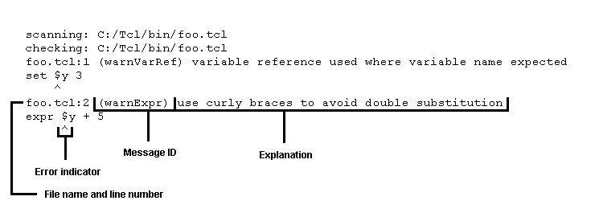
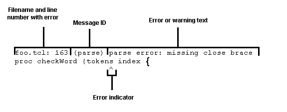

The Tcl Dev Kit TclChecker is a command line tool which helps you find errors in a Tcl script quickly before you run the script. Using the Tcl Dev Kit TclChecker can help you find problems in new scripts, in scripts from older versions of Tcl/Tk, or in scripts that you have ported from another operating system. You can use the Tcl Dev Kit TclChecker to assess the quality of a body of Tcl code or to quickly examine large Tcl files. Tcl Dev Kit TclChecker also warns about potential incompatibilities to help you upgrade applications to the latest releases of Tcl, Tk, and [incr Tcl].
By default, the Tcl Dev Kit TclChecker verifies scripts written for Tcl version 8.5. You can use the Tcl Dev Kit TclChecker with the packages and versions of Tcl, Tk, and [incr Tcl] listed.
|
Tcl |
Tk |
[incr Tcl] |
Expect |
TclX |
|---|---|---|---|---|
|
7.3 |
3.6 |
1.5 |
n/a |
n/a |
|
7.4 |
4.0 |
2.0 |
n/a |
n/a |
|
7.5 |
4.1 |
2.1 |
n/a |
n/a |
|
7.6 |
4.2 |
2.2 |
n/a |
n/a |
|
8.0 |
8.0 |
3.0 |
5.28 |
8.0 |
|
8.1 |
8.1 |
n/a |
5.29 or 5.30 |
8.1 |
|
8.2 |
8.2 |
3.1 |
5.31 |
8.2 |
|
8.3 |
8.3 |
3.1 |
5.32 - 5.38 |
8.2 |
|
8.4 |
8.4 |
n/a |
n/a |
n/a |
|
8.5 (default) |
8.5 |
n/a |
n/a |
n/a |
|
8.6 |
8.5 |
n/a |
n/a |
n/a |
Note: Expect command names that "collide" with command names in the Tcl/Tk core (for example, send) can cause the Tcl Dev Kit TclChecker to misinterpret an Expect script, causing it to report syntax errors. To avoid this, use the exp_ prefix for all such ambiguous commands (for example, use exp_send instead of send).
Note: The version numbers given for the packages should be considered as minimal versions and not as upper boundaries. The checker will still work even if the checked script uses newer versions of the packages, it will just not be able to recognize and check any newer features these versions may have.
The TclChecker is only available as a command-line tool. To check a file using the Tcl Dev Kit TclChecker, enter tclchecker.exe (Windows) or tclchecker (Unix), followed by the file name you wish to check. For example:
tclchecker foo.tclIf your code contains errors or warnings, the Tcl Dev Kit TclChecker provides feedback by default that looks similar to this:
You can specify multiple file names on the same line, for example:
tclchecker foo1.tcl foo2.tclTo check all the files in a directory, use the asterisk ("*") with the .tcl file extension, for example:
tclchecker *.tclIf you don't specify any files, tclchecker expects input from standard input.
For other examples of output, see Examples of Output from the Tcl Dev Kit TclChecker.
To change the font size displayed in the TclChecker, use
Ctrl-plus to increase the font size or Ctrl-minus to
decrease the displayed font size. If you are using Windows with a mouse wheel,
you can alternatively press the Ctrl key and then rotate the mouse
wheel to increase or decrease the font size displayed in the TclChecker.
By default, the Tcl Dev Kit TclChecker performs a two-pass scan of your scripts. The first pass accumulates information about user-defined procedures and user-defined [incr Tcl] classes. This information includes:
The second pass uses this information to provide warnings and error messages concerning the usage of the user-defined procedures, including:
The Tcl Dev Kit TclChecker properly handles all variations of user-defined procedures in namespaces.
Note:The Tcl Dev Kit TclChecker does not currently check the following:
Also, if you define a procedure multiple times, the Tcl Dev Kit TclChecker generates a usage error when calling that procedure only if the call fails to match any of procedure definitions. Because of the dynamic nature of procedure definition and redefinition, the Tcl Dev Kit TclChecker can't determine which argument list is currently valid for the given procedure call.
The Tcl Dev Kit TclChecker does not automatically scan scripts that are sourced by your script. Therefore, you must include on the command line all files that define user procedures and classes used by your script.
For a quicker but less comprehensive check of your scripts, you can use the tclchecker -onepass option to force the Tcl Dev Kit TclChecker to perform a one-pass scan of your scripts. A one-pass scan does not check for any of the potential errors or misuses of user-defined procedures and [incr Tcl] classes described above.
You can also use the tclchecker -verbose option to get a list of all commands used by the scripts you specify that are not defined in that collection of scripts. If you don't include the -verbose option, the Tcl Dev Kit TclChecker doesn't warn you about undefined procedures.
Basic syntax and semantics:
#checker ?-scope line|global|local|block? include|exclude id...
The # is part of the syntax. The -scope defaults to
'line'. id is the code
of a checker message.
-scope defines the region the setting has hold
over.
For the interaction of pragmas with the command line options which control message filtering as well (-check, -suppress, and -Wx) see the section Interaction of pragmas and command line options.
The Tcl Dev Kit TclChecker examines your code and displays a message describing each error or potential mistake that it detects. Depending on the type of script that you are checking, you may want to limit the types of problems that it reports rather than see the entire output from the Tcl Dev Kit TclChecker.
Each message generated by the Tcl Dev Kit TclChecker lists the file and the line number where the error or warning occurred, a messageID, a description of the error or warning, and an error indicator, which is a caret ("^") that indicates the code fragment in which the error occurred. The messageID is the word in parentheses just after the file and line number information. It provides information about the type of problem that generated the error or warning, which are listed below. Using Tcl Dev Kit TclChecker you can specify types of errors and warning that you want to suppress, which allows you to focus to more strategic errors or warnings. The Tcl Dev Kit TclChecker provides suggestions, when possible, on ways to fix the problems that it indicates in the error or warning text.
You can limit output in the following ways:
Messages are grouped into two types of errors and four types of warnings.
The Tcl Dev Kit TclChecker generates a parsing error when it encounters commands that cannot be parsed by the Tcl parser, such as a missing curly brace or badly formed list. For example: the following code generates a parsing error because it is missing a quote at the end of the puts statement:
proc foo {} {
puts "hello
}In cases like this, the Tcl Dev Kit TclChecker attempts to move past the procedure where the parsing error was found, and continue to check additional commands after the parsing error.
The Tcl Dev Kit TclChecker generates a syntax error when it encounters any errors that will cause your script to fail, such as the wrong number of arguments or invalid types or options. For example, the following code generates a syntax error is because the wrong number of arguments are supplied:
set x 3 45Only commands defined in Tcl, Tk, or [incr Tcl] are checked for syntax errors.
The Tcl Dev Kit TclChecker generates warnings when a command is used that may be nonportable between various platforms.
set file [open $dir/$file
r]In this example, the file join command should be used so that the correct directory and file separator is used, that is, "\" on Windows.
Upgrade warnings indicate features that have changed in a later version.
namespace foo {
variable bar 0
}When [incr Tcl] was upgraded to 3.0, it inherited the Tcl namespace command. The syntax of defining a namespace has changed from older versions of [incr Tcl] because of this. With earlier versions of [incr Tcl], correct usage was:
namespace foo {body}With [incr Tcl] 3.0 and later, correct usage is shown below:
namespace eval foo {body}The Tcl Dev Kit TclChecker generates a warning when a performance-optimization opportunity is detected. For example: if your code included:
set x [expr $x * $y]it would generate a performance warning because performance is improved with curly braces, as shown below:
set x [expr {$x * $y}]The Tcl Dev Kit TclChecker generates a warning when a command is used in a manner that is possibly incorrect but is still syntactically legal. For example, the incr command expects a value and not a reference below:
incr $counterThe Tcl Dev Kit TclChecker generates a warning when a command is used in a manner that is correct but may lead to less readable code.
The Tcl Dev Kit TclChecker can warnings when commands have to be used in a specific order and are not. This however requires appropriate ordering specifications in PCX files. The standard PCX files built into the checker have no such.
You can control which types of errors and warnings the Tcl Dev Kit TclChecker lists by specifying one of the -W flags on the command line.
|
Flag |
Description |
|
|---|---|---|
|
-W0 |
Display nothing. Any message you wish to see has to be enabled explicitly via -check. |
|
|
-W1 |
Display parsing and syntax errors. |
|
|
-W2 |
Display parsing and syntax errors, and usage warnings. |
|
|
-W3 |
All errors, all warnings except for 'upgrade' warnings. This is the default. | |
|
-W4 |
Display parsing and syntax errors, portability warnings, upgrade warnings, performance warnings, style warnings, and usage warnings. |
|
|
-Wall |
Alias for -W4 |
As an example, the first time you check your script you might want to display only errors but not warnings. You might first run the Tcl Dev Kit TclChecker with the -W1 flag, which only displays parsing and syntax errors, but does not display any warnings. After examining the output from running with the -W1 flag and fixing any errors that were reported, you might run with the -W2 flag to see a variety of additional warnings.
For the interaction of pragmas with these options see the section Interaction of pragmas and command line options.
Each warning or error message has an associated messageID. You can filter out the display specific warnings or errors by specifying -suppress to prevent that type of messageID from being displayed. You might want to filter out certain messages because they point out items that do not apply to the script that you are checking, for example: if you are porting a script to only one platform, you do not care whether your script has portability issues.
In the following example, the messageID is "nonPortCmd":
foo:tcl:53 (nonPortCmd) use of non-portable
command
registry values $key
^You can suppress this type of message by specifying -suppress nonPortCmd on the command line, for example:
tclchecker -suppress nonPortcmd
foo.tclTip: You can suppress multiple messageID types at the same time by specifying -suppress with the multiple instances of messageIDs in quotation marks, for example:
tclchecker -suppress "nonLiteralExpr badOption"
foo.tclYou can also specify -suppress with the messageID for each instance of the message ID that you want to filter, for example:
tclchecker -suppress nonLiteralExpr -suppress
badOption foo.tclFor a complete list of all the messageIDs, see Tcl Dev Kit TclChecker Messages.
For the interaction of pragmas with
this option see the section
Interaction of pragmas and command line options.
 Top
Top
Overriding the Suppression of Specific Messages
The complementary option to -suppress is -check. Using it disables the filtering of specific warnings or errors, to force that type of messageID to be displayed even if the general -Wx settings would prevent that.
For the interaction of pragmas with
this option see the section
Interaction of pragmas and command line options.
 Top
Top
The option -range takes a comma-separated list of ranges as argument and allow the user to restrict the printing of messages to only those which fall into one of the specified ranges. Examples:
The option -ranges is an alias for -range taking the exact same argument.
Note that their use is most sensible if the checker is asked to process only a single file, because the range specification is applied identically to all files given to the checker.
The user is able specify and extend the checker with their own options, similar to how the user can extend it with more checker rules.
A new user-option is specified in terms of both existing and other user-defined options. This means that during option processing the user-defined option will simply be replaced by the set of options which was specified for it. Note that it is an error to specify a user-defined option in terms of itself, be it directly or indirectly. Doing will cause the checker to abort with an error when processing the option.
More information about this advanced feature can be found in the section about TclChecker Option Files (PCO Files).
The filtering of messages via pragmas and command line options (-check, -suppress, -Wx) is done in the following order, from first to last.
If a setting is found at a specific level all settings from the levels coming after it have no effect.
For example, using the -check and -suppress options overrides both -Wx, and global pragmas.
Another example, all pragmas override the -Wx options.
To provide examples of the Tcl Dev Kit TclChecker output, here is the sample script, foo.tcl, that is checked in the examples that follow:
set $y 3
set x [expr $y + 5]
set x y z
if {$x > 6}
{
puts out "world"
}
proc foo {args bar} {
puts "hello, world"
}
proc p {{a 0} b} {
puts -nonew "hello"
}You can specify one of three possible output formats via the -as option when you run the Tcl Dev Kit TclChecker:
This is the default output format generated by all previous revisions of the TclChecker. An example is shown in the section about Specifying Verbose Feedback.
The verbosity of this format can be further modified, as explained later, see Specifying Verbose Feedback and Specifying Quiet Feedback.
This is the first machine-readable format. In it the generated
messages are printed as Tcl dictionaries, each starting on a new
line. Note that each dictionary may span multiple lines, it is
necessary to use info complete to detect and handle this.
See section Message dictionaries to learn about the keys and values of these dictionaries.
This second machine-readable format is similar to the format generated for -as dict in that it prints the same dictionaries. It differs in two respects however.
message). This means the overall output has
the form of a Tcl script which can be directly and easily read, via
source.
See section Message dictionaries to learn about the keys and values of these dictionaries.
You can specify the -verbose argument when you run the Tcl Dev Kit TclChecker. This option has an effect only when the regular output format is selected. When you specify -verbose, the Tcl Dev Kit TclChecker displays the error information in three lines and the version and summary information when the Tcl Dev Kit TclChecker exits, for example:
tclchecker -verbose foo.tclThe feedback from the command line with -verbose specified looks similar to this:
scanning: C:/Tcl/jen/foo.tcl
checking: C:/Tcl/jen/foo.tcl
foo.tcl:6 (warnVarRef) variable reference used where variable name expected
set $y 3
^
foo.tcl:7 (warnExpr) use curly braces to avoid double substitution
expr $y + 5
^
foo.tcl:7 (undefinedVar) use of undefined variable "y"
expr $y + 5
^
foo.tcl:7 (warnExpr) use curly braces to avoid double substitution
expr $y + 5
^
foo.tcl:7 (undefinedVar) use of undefined variable "y"
expr $y + 5
^
foo.tcl:8 (numArgs) wrong # args
set x y z
^
foo.tcl:10 (noScript) missing a script after "if"
if {$x > 6}
^
foo.tcl:11 (warnUndefProc) undefined procedure:
puts out "world"
{
^
foo.tcl:15 (argAfterArgs) argument specified after "args"
proc foo {args bar} {
^
foo.tcl:19 (nonDefAfterDef) non-default arg specified after default
proc p {{a 0} b} {
^
Packages Checked | Version
-----------------|--------
blend 1.2
tcl 8.4
tk 8.4
expect 5.38
[incr Tcl] 3.1
oratcl 2.5
sybtcl 3.0
tclCom 1.0
tclDomPro 1.0
tclX 8.2
xmlAct 1.0
xmlGen 1.0
xmlServer 1.0
Number of Errors: 4
Number of Warnings: 6
Commands that were called but never defined:
--------------------------------------------
puts out "world"
You can specify the -quiet argument when you run the Tcl Dev Kit TclChecker. When you specify -quiet, the Tcl Dev Kit TclChecker displays the basic error information on one line with the messageID, instead of the three-line output that includes the code body and the error indicator, for example:
tclchecker -quiet foo.tclThe output with the -quiet argument appears as follows:
foo.tcl:6 (warnVarRef) variable reference used where variable name expected foo.tcl:7 (warnExpr) use curly braces to avoid double substitution foo.tcl:7 (undefinedVar) use of undefined variable "y" foo.tcl:7 (warnExpr) use curly braces to avoid double substitution foo.tcl:7 (undefinedVar) use of undefined variable "y" foo.tcl:8 (numArgs) wrong # args foo.tcl:10 (noScript) missing a script after "if" foo.tcl:11 (warnUndefProc) undefined procedure: puts out "world" foo.tcl:15 (argAfterArgs) argument specified after "args" foo.tcl:19 (nonDefAfterDef) non-default arg specified after default
The dictionaries written when one of the two machine-readable output formats was chosen (See section Specifying the output format), may contain the following keys, and associated values.
To specify that the application should check the input files against a version of Tcl or Tk other than the default, use the -use command line switch. For example, to check a file written for Tcl7.5 and Tk4.1, enter:
tclchecker -use "Tcl7.5" -use "Tk4.1" foo.tcl
Valid -use arguments are in general package names immediately followed by a version number, i.e. without a separator. Supported package names are "Tcl", "Tk", "Expect", "ITcl", "Tclx", and any other package for which a ".pcx" file is available. Option specifications for unsupported packages are ignored. See Overriding Specified Packages below for further notes. Packages and Version Numbers lists the versions supported for each package. If you do not specify a version for a package, the Tcl Dev Kit TclChecker uses the first version of the package it locates.
When specifying older versions of Tcl and any extension (including Tk), the versions of Tcl and any specified extension must be compatible, as listed in Packages and Version Numbers. The following example includes incompatible versions and should not be used:
tclchecker -use "Tcl7.5" -use "Tk4.0" foo.tcl
The correct version pair is:
tclchecker -use "Tcl7.5" -use "Tk4.1" foo.tcl
When determining the version of a package to check a script against
the checker first and foremost relies on the information found in the
package require statements found in the input files.
In essence it will use the rules for the specified version of the
package, if such was given, or the rules for the highest version it
knows, if not, based on the first package require
statement it encounters.
As that may lead to problems if the scripts directly or indirectly
request conflicting versions of the package, or of Tcl itself, the
checker allows the user to overide and bypass its version selection
process via the option -use.
For example, specifying -use Tk4.1 will force the
application to check the code against version 4.1 of Tk, even if the
package require statements found in the code specify a
different version of Tk (or none).
Note that the specification of option
-use does not cause the checker to
actually activate the syntax rules of the named package. It
only forces the use of a specific version of the
rules should they be activated via the presence of package
require for the package in one or more of the input files.
When checking input files using a package FOO, but not using
package require FOO anywhere the rules for FOO will not
be activated, regardless of a specification of -use
or not.
This means that currently it is necessary to either explicitly
specify package require FOO wherever the package is used,
or to write a small helper input file containing only package
require FOO to activate the rules for FOO.
If a helper file is used it should be listed as early on the command
line as possible, so that any scan phase rules for FOO are activated
before any code using commands of FOO.
The command line in the following example requests -W1 error checking, which includes only parsing and syntax errors:
tclchecker -W1 foo.tclThe feedback from the command line with -W1 specified looks similar to this:
scanning: C:/Tcl/jen/foo.tcl
checking: C:/Tcl/jen/foo.tcl
foo.tcl:8 (numArgs) wrong # args
set x y z
^
foo.tcl:10 (noScript) missing a script after "if"
if {$x > 6}
^
foo.tcl:15 (argAfterArgs) argument specified after "args"
proc foo {args bar} {
^
foo.tcl:19 (nonDefAfterDef) non-default arg specified after default
proc p {{a 0} b} {
^
The command line in the following example requests -W2 error checking, which includes parsing errors, syntax errors, upgrade warnings, and performance warnings.
tclchecker -W2 foo.tclThe feedback from the command line with -W2 specified looks similar to this:
scanning: C:/Tcl/jen/foo.tcl
checking: C:/Tcl/jen/foo.tcl
foo.tcl:8 (numArgs) wrong # args
set x y z
^
foo.tcl:10 (noScript) missing a script after "if"
if {$x > 6}
^
foo.tcl:15 (argAfterArgs) argument specified after "args"
proc foo {args bar} {
^
foo.tcl:19 (nonDefAfterDef) non-default arg specified after default
proc p {{a 0} b} {
^
The command line in following example requests -W3 error checking, which includes parsing errors, syntax errors, upgrade, portability, and performance warnings.
tclchecker -W3 foo.tclThe feedback from the command line with -W3 specified looks similar to this:
scanning: C:/Tcl/jen/foo.tcl
checking: C:/Tcl/jen/foo.tcl
foo.tcl:6 (warnVarRef) variable reference used where variable name expected
set $y 3
^
foo.tcl:7 (warnExpr) use curly braces to avoid double substitution
expr $y + 5
^
foo.tcl:7 (undefinedVar) use of undefined variable "y"
expr $y + 5
^
foo.tcl:7 (warnExpr) use curly braces to avoid double substitution
expr $y + 5
^
foo.tcl:7 (undefinedVar) use of undefined variable "y"
expr $y + 5
^
foo.tcl:8 (numArgs) wrong # args
set x y z
^
foo.tcl:10 (noScript) missing a script after "if"
if {$x > 6}
^
foo.tcl:11 (warnUndefProc) undefined procedure:
puts out "world"
{
^
foo.tcl:15 (argAfterArgs) argument specified after "args"
proc foo {args bar} {
^
foo.tcl:19 (nonDefAfterDef) non-default arg specified after default
proc p {{a 0} b} {
^
The option -style-maxsleep takes an integer number
as argument and sets it as the number of seconds above which the
checker will issue an Expect::warnStyleSleep message
when checking an exp_sleep command. The default is 5
seconds. The option has no effect if the checking of Expect commands
is disabled and/or warnings are filtered.
The option -indent takes an integer number greater than two as argument and sets it as the number of characters (and multiples) to expect as indentation of commands. Deviations will cause the checker to issue warnStyleIndentCommand messages. The default is 4, matching the Tcl Style Guide. In other words, under normal circumstances there is no need to use this option at all.
The command line in the following example requests checker to not
perform any syntax checking, but to only collect the names of all
packages found in package require statements in the input
files, and to print this list after the scan has completed. Its use
implies -onepass as well.
tclchecker -packages foo.tclTclApp uses this mode to fill the list of packages with the packages directly required by the files to wrap. See the function Scan for required packages in the Packages Tab.
This section provides a general overview on TclChecker definition files, including how to name and load them for use with the tclchecker tool. Later, this document provides information for building custom TclChecker definition files using the PCX API.
TclChecker definition files are used with the tclchecker tool to analyze Tcl code for errors. TclChecker definition files have a ".pcx" extension. For each Tcl package you wish to analyze using tclchecker, there must be a corresponding ".pcx" file. This file declares the method by which the commands contained in the source Tcl package are checked. TclChecker definition files are written using the PCX API.
Note: This document uses the terms "TclChecker definition file", "PCX file", and "checker package" to identify the file used by the tclchecker tool to check Tcl code.
PCX files also contain definitions extending the rules used by tclchecker to analyze Tcl package sources. Fundamentally, each PCX file contains a Tcl script, which is executed by the tclchecker when the file is loaded.
Warning: Tcl code contained in PCX files is trusted. This means that PCX files are run directly by the Tcl interpreter and are not parsed with the tclchecker tool. When a PCX file is executed it should restrict itself to the PCX API. Because this code is executed without restriction it can potentially redefine everything in the program being checked (including functions, variables etc.).
The Tcl Dev Kit TclChecker comes with embedded PCX files for
standard Tcl packages. Examples include: 'Tk', 'Expect', and 'Blt'. To
view an embedded PCX file, use the ActiveTcl Virtual Filesystem
Explorer tool to navigate to the "pcx" directory
(located, by default, in
<installdir>bin/tclchecker(.exe)/data/pcx), and
then save the PCX file to an existing folder.
To use tclchecker on packages without an embedded PCX definition file, you must create a custom PCX file. For more information, see Using the PCX API.
When creating custom PCX files for use with a Tcl package, the name of the
PCX file must match the Tcl package name exactly. For example, if a Tcl package
is loaded using the command package require FoO, then the
PCX file containing the checker definitions for this package must also be named
FoO.pcx (case must match exactly).
Underscores ("_") in the pcx filename are used to indicate a "::"
in a package name. For example, a package called Foo::Bar
would use a corresponding pcx file called Foo_Bar.pcx.
Note: For platforms with case-insensitive filesystems (such as Windows), all package names must be unique. For example, filenames like 'expect.pcx' and 'Expect.pcx' should not be used as they are considered the same file.
Tcl searches various paths for PCX files. These paths are determined on startup. The first time a PCX file is required in a package through the package require command, the paths are scanned and a list that maps package names to PCX files is created.
Note: Subdirectories in the search path are not scanned as the checker does not search recursively.
To disable the usage of all PCX files during Tcl Dev Kit TclChecker sessions, specify the option -nopcx. Otherwise, PCX files are loaded on demand as needed. A file is determined to be needed if the code scanned by the checker contains a valid require statement for that package.
To specify additional locations where the Tcl Dev Kit TclChecker should look for PCX files, specify the option -pcx directory. The Tcl Dev Kit TclChecker will look for PCX files in the following locations and order (unless the -nopcx option is specified):
tclchecker(.exe).lib directory of the Tcl Dev Kit installation.TCLDEVKIT_LOCAL.Note: If multiple PCX files with the same name occur in more than one location, the last file encountered by the checker is loaded. If the files contain conflicting settings, the setting encountered in the last PCX file is used.
This section outlines how to build a custom PCX file for use with the Tcl Dev Kit TclChecker. The PCX file for 'Tk' is used to demonstrate the format of a standard checker package.
A PCX file contains two types of declarations, these are:
Every PCX file must begin and end with the following two
pcx:: declarations:
pcx::register declaration must be the first
pcx:: command called after loading the
PCX API.
pcx::complete command must be the last command called
in the PCX file.Otherwise, declarations can be placed in any order within a PCX file. For readability purposes, however, it is recommended you separate PCX declarations into the following three sections:
pcx::register command. These are checker commands used in
rule definitions and other arbitrary commands to support them.
These conditional declarations
are defined during loading and are used only after rule definitions are
activated.The PCX file management header contains the declarations that are global to the PCX checker package.
Tk Package Example: The PCX management header from the Tk package.
# ### ######### ########################### ## Requisites package require pcx ; # PCX API package require analyzer ; # Analyzer API (checker commands definitions). # ### ######### ########################### ## Tcl core version dependencies of the package this checker is for. pcx::register coreTk Tk pcx::tcldep 3.6 needs tcl 7.3 pcx::tcldep 4.0 needs tcl 7.4 pcx::tcldep 4.1 needs tcl 7.5 pcx::tcldep 4.2 needs tcl 7.6 pcx::tcldep 8.0 needs tcl 8.0 pcx::tcldep 8.1 needs tcl 8.1 pcx::tcldep 8.2 needs tcl 8.2 pcx::tcldep 8.3 needs tcl 8.3 pcx::tcldep 8.4 needs tcl 8.4 # ### ######### ###########################
Description:
pcx package is loaded to provide access to all
tclchecker APIs.pcx::register command. The analyzer package
loads the APIs used for custom TclChecker commands.
Note: The analyzer package is required in
this example for clarity. Because this package is automatically loaded, it
does not need to be specified in your custom PCX file. pcx::register coreTk Tk statement declares that this
PCX file uses the ::coreTk namespace internally, and that
the Tk package is associated with this file.pcx::tcldep statements then declare
which version pairs of Tcl and Tk are supported by the PCX file.
The first column of numbers (second column from the left) declares which
Tk packages are supported. The last column of numbers (rightmost column)
declares the minimum Tcl version required to support the PCX file.
The text 'needs tcl' is required, and is checked. Note:
If no version pairs are declared then tclchecker
assumes the default version of Tcl.Rule definitions comprise the second part of a PCX checker file. Rule definitions map commands and variables to actions. Rules are defined in PCX files and are associated with a function or variable in a corresponding source package. A rule executes an action when tclchecker encounters the variable or function in the Tcl source specified in the corresponding PCX file. Possible actions include: printing custom warning or error messages, or indicating incorrect usage of a variable or function. The latter example requires use of the analyzer API to write custom checker commands.
There are two interfaces available for defining rules, simple and advanced. The simple interface uses the pcx::init function to initialize rule definitions. The advanced interface provides greater flexibility for rule definition as all initialization must be done through a custom init procedure. Both have comparable APIs; the simple interface serves as a wrapper for the advanced interface.
There are four types of rules in both the simple and advanced interfaces. These are:
Three more types of rules have only a simple interface. These are:
The simple rule interface uses the pcx::init procedure to automatically load rules and package versions. The pcx::init function performs the calls into the advanced interface. The simple interface commands for defining the four types of rules are: pcx::scan, pcx::check, pcx::var, and pcx::mathop. See Initializing Rules for more information on the pcx::init command.
The pcx::scan command defines tclchecker scanning rules. Command syntax follows:
pcx::scan [ver] [cmd] <def>
[ver] is the package version the rule defines.[cmd] is the name of the command to be checked.<def> is the rule definition. This parameter is optional,
if not specified then the analysis command is used during scanning.The pcx::check command defines tclchecker analysis rules. Command syntax follows:
pcx::check [ver] [mode] [cmd] [def]
[ver] is the package version the rule defines.[mode] is always std.[cmd] is the name of the command to be checked.[def] is the rule definition.The pcx::var command defines variable (var) rules. Command syntax follows:
pcx::var [ver] [varname]
[ver] is the package version the rule defines.[varname] is the fully qualified name of the
variable. The full namespace must be included.The pcx::mathop command defines operator/math rules. Command syntax follows:
pcx::mathop [ver] [opname] [oparity]
[ver] is the package version the rule defines.[opname] is the name of the math function or operator.[oparity] is the number of arguments expected by the math function or operator.The pcx::perfile command defines per-file checkers. Command syntax follows:
pcx::perfile [ver] [commandprefix]
[ver] is the package version the rule defines.[commandoprefix] is the command prefix to run. When invoked a single argument is added to the command prefix, telling it when the invokation happened. The possible argument values are
The pcx::nameStylePattern command defines name pattern rules. Command syntax follows:
pcx::nameStylePattern [ver] [style] [pattern]
[ver] is the package version the rule defines.[style] is the type of name to match the pattern against. Allowed codes are
[pattern] is the regular expression to match the given names against.The pcx::order command defines command ordering rules. Command syntax follows:
pcx::order [ver] [grammar]...
[ver] is the package version the rule defines.[grammar] is one of the context-free grammars which define in which order we can use commands.Versioning with the simple interface is a less intensive method of defining the relationship between rules and package versions. This is because the pcx::init function scans for version number information and initializes the correct version of the rule with the corresponding package version. If pcx::init does not find a rule matching the provided package version, pcx::init then initializes the rule with the largest version number below the specified version. For example, if a PCX file contains rule definitions for package versions 8.0, 8.1, 8.2, 8.4 and the package being loaded has version 8.3, then the rule for version 8.2 is loaded.
Limitation: It is impossible to rename or delete commands and variables from a PCX file in future package versions using the simple interface. This is because once a rule is defined for a command and a package version, all future packages will load a rule for that command. For example, if package version 8.2 contains the command Foo with a matching 8.2 version rule defined in the PCX file, and this command is removed in version 8.3, then using that PCX file will still load rule 8.2 for the Foo command. To handle this limitation of the simple interface, the PCX developer must use the advanced interface described in the following section.
The advanced rule interface uses a custom init procedure to define rules and package versions. The advanced interface commands pcx::checkers, pcx::scanners, pcx::variables, and pcx::mathoperators must be placed within the body of the init function to be correctly defined. Beyond this requirement, there are no restrictions on how definitions are stored. Lastly, defining rules with the advanced interface handles the limitation of the simple interface where commands could not be renamed between package versions. This is accomplished through using the version passed to the init function to ensure that the correct rule is activated. See Initializing Rules for more information on custom init commands.
See Appendix A: PCX API Commands for the full advanced interface definition.
This section demonstrates, through the 'Tk' package, how to define custom messages and initialize rules.
Defining Custom Messages
Tk Package Example: Defining new messages.
# ### ######### ###########################
## Package specific message types and their human-readable translations.
pcx::message badColormap {invalid colormap "%1$s": must be "new" or a window name} err
# ### ######### ###########################
Description:
pcx::message command defines new message codes
for the errors and warnings generated by the PCX file. The syntax is as
follows:pcx::message [code] [text] [types]
[code] parameter is the ID of the new message.pcx::message command
the messageID must be specified without a namespace prefix.
This is because pcx::message automatically adds the name of
the checker package as a prefix to the messageID. However, when the
message ID is used to display a message with the logError
command the prefix has to be specified. For example,
coreTk::badColorMap[text] parameter is the human readable
string displayed by tclchecker.
This string may contain placeholders of the form '%<digit>$s'.
When the message is displayed, these placeholders will be replaced with
the additional arguments given to the 'logError' call. The <digit>
placeholder specifies which argument to use starting from '1'.[types] parameter is a list of message types used by
message filtering mechanism in tclchecker.
Legal type codes are 'err', 'warn', or 'upgrade'.Tk Package Example: Initializing rules in the PCX file.
# ### ######### ###########################
proc ::coreTk::init {ver} {
::pcx::init coreTk $ver
}
# ### ######### ###########################
Description:
::coreTk is used to declare all messages
and rules. Rule definitions and messages must be declared
in the namespace reserved for the PCX checker definition. Namespaces are
defined in the management header.init command activates the rule definitions for the
specified version of the source package. If the PCX file
does not declare a custom init command,
tclchecker will define the command as shown
above. Important: The pcx::init command
should always be called from the init function to ensure
that simple rule definitions are loaded.init, action, and
cleanup, which have to be used in this order, and
action can be used zero or more times.
# ### ######### ###########################
# Simple context-free grammar specifying the order of use for the
# commands in this package FOO. The {} is the start-symbol. It has to
# appear. Names used on the left side are non-terminal symbols. Every
# other name is a terminal symbol, a name for a command whose order of
# use is specified. Names using '$$$' as prefix are reserved and must
# not be used.
pxc::order 1.0 {
{} {init ACTIONS cleanup}
{ACTIONS} {}
{ACTIONS} {action ACTIONS}
}
# Now define the syntax rules for the commands as usual, and tag them
# using 'checkOrderOf'. The '...' is the place holder for the regular
# syntax checking commands. Note how the tags used in 'checkOrderOf'
# match up with the terminal symbols of the grammar above. That is the
# only requirement. They do not have to match the actual command names.
# It is a good idea to do so, and recommended, required it is not.
pcx::check 1.0 std FOO::init checkOrderOf FOO init {...}
pcx::check 1.0 std FOO::action checkOrderOf FOO action {...}
pcx::check 1.0 std FOO::cleanup checkOrderOf FOO cleanup {...}
# ### ######### ###########################
This is the most simple example possible. In a more complex example
the package FOO would define commands which provide new control
structures, either loops or branching. To handle these we will need
the commands checkOrderLoop,
checkOrderBranches, and
checkOrderBranch. See Appendix B: Analyzer API Commands for their
definition.
| Simple API: | Advanced API: | Rule Type: | Definition: | Notes: |
| pcx::scan | pcx::scanners | Scanning | Scan command rules. | Always taken. |
| pcx::check | pcx::checkers | Analysis in std mode. | Analysis command rules. | Always taken. |
| pcx::var | pcx::variables | Variable | Variables declared by the package. | Always taken. |
| pcx::mathop | pcx::mathoperators | Variable | Math functions declared by the package. | Always taken. |
| pcx::perfile | Per file | Checkers run on the whole file | Always taken. | |
| pcx::nameStylePattern | Name Patterns | Patterns to match names against. | Always taken. | |
| pcx::order | Allowable command order | One or more context-free grammars | Always taken. |
The final section of a PCX checker package contains supporting code. Supporting code consists of a series of procedure and variable definitions for more complicated rule definitions. All supporting code must be defined in the namespace reserved for the PCX checker package. A procedure can be a custom checker command, or a regular command supporting checker commands. Checker commands must follow additional restrictions for correct interoperation with tclchecker.
See Using the Analyzer API for information on checker command syntax.
For information on available checker commands, see Appendix B: Analyzer API Commands.
The Analyzer API is used to write custom checker commands. A checker command is a fundamental building block for checking a Tcl source file command. Checker commands ensure that arguments passed to a function in the Tcl source file are correct. Whenever tclchecker files check the invocation of a command, they consult an internal database that maps command names to checker commands. The tclchecker tool retrieves the checker command associated with the command that occurs in the source package and evaluates it according to the configuration in the checker package (PCX file). The database does not directly map to a command, but rather to the command prefix. This means it is possible to use a single generic checker command for many commands, with suitable parameterization.
Checker commands take at least two arguments. The first arguments are user-defined. The second-last argument is a list containing the arguments passed to the function being checked. The last argument is the index of the current argument being checked. The interface for a checker command is as follows:
proc checkFoo {... token index} {body}Description:
checkFoo is a
checker command for a 'Foo' function.token parameter is the list of arguments from the
function being checked. This list describes the command and its
components in detail, as generated by the parser package.index parameter indicates which item in the
token list is currently being checked.body is the checker command code. Generally, checker
command code will contain calls into the analyzer interface to process the
argument list.For information on available checker commands, see Appendix B: Analyzer API Commands.
The checker command interface can be used to write generic checker commands, as well as checker commands which call other checker commands to perform the actual task. The latter usage requires the chaining or grouping of checker commands.
Chaining: A primary checker command performs some tasks, and then passes the remaining tasks to a subsequent checker command. The subsequent command is explicitly specified as an argument to the primary checker command. Other subsequent checker commands may follow.
Grouping: A primary checker command has several other checker commands as arguments. The primary command then calls the subsequent commands in various patterns.
This section provides a general overview on TclChecker option files, including how to name and load them for use with the tclchecker tool. Later, this document provides information for building custom TclChecker option files using the PCO API.
TclChecker option files are used with the tclchecker tool to specify user-defined custom options. TclChecker option files have a ".pco" extension. Each file declares one or more user-defined options and their replacements (other options). TclChecker option files are written using the PCO API.
Note: This document uses the terms "TclChecker option file", and "PCO file" interchangeably to identify the file used by the tclchecker tool to specify user-defined options.
Warning: Tcl code contained in PCO files is trusted. This means that PCO files are run directly by the Tcl interpreter and are not parsed with the tclchecker tool. When a PCO file is executed it should restrict itself to the PCO API. Because this code is executed without restriction it can potentially redefine everything in the tclchecker tool.
In contrast to PCX files the Tcl Dev Kit TclChecker does not come with embedded PCO files.
It is therefore always necessary to create custom PCO files. For more information, see Using the PCO API.
When creating custom PCO files the name of the PCO file is
irrelevant as there are no other entities associated with it. The only
exception is that it has to have the extension .pco. This
is in contrast to PCX files whose names have to
match the names of the Tcl packages they belong to.
Tcl searches various paths for PCO files. These paths are determined on startup, before the tclchecker tool starts processing its command line.
Note: Subdirectories in the search path are not scanned as the checker does not search recursively.
The Tcl Dev Kit TclChecker will look for PCO files in the following locations and order:
tclchecker(.exe).lib directory of the Tcl Dev Kit installation.TCLDEVKIT_LOCAL.The first item is present to enable us to distribute embedded PCO files in the future, should we wish to. The last item means that tclchecker will search for PCO files in all the places the user wants it to look for PCX files as well.
Note: If multiple PCO files defining the same option occur in more than one location, the last file and definition encountered by the checker is loaded.
This section outlines how to build a custom PCO file for use with the Tcl Dev Kit TclChecker.
A PCO file contains one or more of a single type of declarations. Each declaration names a new option and specifies a list of options to replace it with when found on the command line. All declarations are executed when the PCO file containing them is loaded.
Example of an option definition:
# -*- tcl -*-
# TDK Checker PCO file
#
checkerCmdline::Def Wats {
add -check warnStyleError
add -check warnStyleExit
add -check warnStyleSleep
add -suppress warnStylePlainWord
}
checkerCmdline::Def,
and checkerCmdline::DefList, with syntax:
checkerCmdline::Def option script
This defines a new option and uses a script to specifies the list
of words to replace it with when the option is encountered on the
command line. The command to add words to the replacement list is
add. It accepts one or more arguments, each a new word
which is appended to the list.
The option name can be specified as either -foo or
foo, in both cases the new option is -foo.
Note that option names are case-sensitive.
checkerCmdline::DefList option replacement
This defines a new option and specifies a list of words to replace
it with when the option is encountered on the command line.
The option name can be specified as either -foo or
foo, in both cases the new option is -foo.
Note that option names are case-sensitive.
Reserves <namespace> for PCX definitions of package <pkg>. Defines <namespace> as the name of the new checker package. If <pkg> is missing, <namespace> replaces it.
Declares that <version> of the current checker package requires version ?<tclver>? of the Tcl core for proper checking.
Ensures presence of a PCX file for the package in memory. Use when a PCX file uses a definition of another file. For example, Blt asks for Tk.
Advanced API. Accepts a serialized array that maps command names to scanner definitions.
Advanced API. Activates the checker definitions for the listed commands. Accepts a serialized array that maps command names to checker definitions.
Advanced API. Activates variable definitions in the checker. Takes a list of variables to define.
Advanced API. Activates operator/math definitions in the checker. Takes a list of math functions to define, each in the form <opname>/<oparity>.
Returns the current scanner/checker definition for the command. Empty if there is no definition for the command. Used by checker packages to conditionally define commands, and to copy an existing definition for use in a new one.
Common setup command for definitions. Uses checkers, scanners, and variables to activate definitions stored <namespace> variables in. Activates the definitions of version <ver>.
Simple API. Defines tclchecker scanning rules.
Simple API. Defines tclchecker analysis rules.
Simple API. Defines variable rules.
Simple API. Defines operator/math rules.
Simple API. Defines per-file rules.
Simple API. Defines name pattern rules.
Tests if the checker package in <namespace> has active definitions. Returns a boolean: 'true' if active, 'false' otherwise. The active version is stored in the second argument, a variable name.
Returns the version of the checked package <pkg>, or '-1' if the package is not checked. Used in new checker commands to place conditions on checks.
Specifies one or more grammars which define the allowable orders in which commands of the package can be used.
Each grammar is a dictionary mapping from a non-terminal symbol
to a list of symbols allowed as expansion of the non-terminal
(right-hand-side). All symbols which are used on some
right-hand-side but never as a key are terminal symbols. The '{}'
non-terminal symbol has to occur, it is the hardwired start-symbol
of the grammar. No symbol may $$$ as prefix for its name,
symbols doing so are reserved for internal use. The
terminal symbols have to match the tags used as arguments for
checkOrderOf calls.
Use the Analyzer API to build custom checker commands.
Pushes a context on the context stack, then calls the chained checker.
cIndex: Index of the word containing the context information.
strip: Boolean, set if word containing context name has to have the head stripped off.
For scan commands.
Checks a "proc" for the correct number of arguments.
pInfo: Proc declaration (argument lists)
Checks if the procedure in the word to check is defined more than once.
Check a script in a single word (procedure body, control commands).
Check if the word contains subcommands, etc. and invokes their checker commands.
Check the expression for subcommands, etc.
Checks each word (checkWord) in the command.
A primitive grouping operation which simply invokes the chained checkers in sequence without additional checks, like number of arguments.
Checks that the number of arguments is between min and max. If
that is not the case we default to checkCommand to check
all words. If the number of words is in the specified range we go
through the list of checkers and execute them. Each checker is
started where its predecessor left off. If there are words left to
check after the last checker was executed the execution of the last
checker is repeated until there are no words left.
A value of -1 for max means that the number of arguments has no finite upper bound.
This is the basic sequential composition operator.
A more convenient form of checkSimpleArgs 0 0 {}.
I.e. this checks that we have consumed all arguments.
Similar to the previous checker, but not quite. "backup" is the number of fixed tail arguments for the command. These are checked through the execution of tailCmd. All other arguments are checked with headCmd. The head arguments are checked before the tail arguments.
If the head checker did not process an argument,
checkWord will be used instead. This happens until all
head arguments are processed.
See checkTailArgs, but the tail arguments are checked before
the head arguments.
This command checks switch arguments similar to the
checkSimpleArgs checker. It checks to see if the minimum
number of words can be found in the current command, and then
checks "num" args. This checker is designed to be used inside
custom checkers to assist checking switch arguments (e.g., the
"expect" command.)
This is the primary composition operator for handling of subcommands (here called "options").
The optionTable is a list of 2-tuples mapping from subcommand names to checkers for the arguments after the subcommand.
If none of the options match, the 'default' checker is used. If the default is empty an error will be generated for that case.
Defaults to checkCommand if the subcommand word is not literal.
Convenience wrapper to checkConfigure, see below.
Checks that the next word is on the list of allowed
keywords. If exact is not set, unique abbreviations of the
keywords are allowed too. Falls back to checkWord for
non-literals.
Similar to checkKeyword. Differences:
If a switch with an action is found the checker in the action is executed for the switch argument.
Similar to checkSwitches. Does not check for switches beyond the
'backup' tail arguments of the command. Ignores arguments behind the switches.
Similar to checkSwitches. Does not check for switches beyond the
'backup' tail arguments of the command. Ignores arguments behind the switches.
Similar to checkSwitches. Difference: Decouples the execution of checkers
for a switch from the notion that a switch takes an argument. This allows
for switches without arguments, yet needing a checker, for
example to warn about portability problems with said switch.
Options is a list of switch/action pairs. If allowsingle is set, a single argument is ok. Otherwise an error is generated. Checks the arguments for options and values as defined in the table.
See checkConfigure above, but does not check the option
values.
See checkConfigure above, but unknown options do not cause the
generation of errors, only warnings. This is for commands whose set
of understood options is extensible (like the builtin 'return'
command in Tcl 8.5).
This checker does nothing. It is useful as default checker for
checkSwitches to force them to return their current position instead of
trying to check the non-switch arguments coming behind them.
A list of 2-tuples. First element of a tuple is the number of arguments triggering the checker specified as the second element of that tuple.
Same basic behavior as checkSimpleArgs, but for checking a list,
not a command.
Basic behavior as checkListValues, but the expected list length
is further constrained to be k modulo n.
Basic behavior as checkListValues, but the list has to be a
dictionary with minimum length min (multiple of 2). They keys and
values are validated with their respective checkers.
Checks that next word is a valid level designator (#n, n) and then invokes the chained checker.
Invokes the chained checker if the checking is at word 'idx' when this checker was invoked. Words are counted from zero.
This checker assumes that the remainder of the words falls into one of the following three cases:
Checks procedure calls where a number of fixed arguments is appended implicitly to the command. I.e. this is for checking literal command prefixes used as callback command. checking is limited to known user-defined procedures.
See checkBody, but script is distributed over a list of arguments
(examples: eval, after, ...).
See checkSwitches for basic behavior.
Difference: Stops at first unrecognized switch, and
does not log unrecognized switches as error.
Checks if the specified word is a literal or not and invokes the respective chained checker. The word is specified as offset relative to the current word.
Example of use is the builtin
proc command. If the body is dynamic using the scope
and context machinery is contraindicated.
Invokes all chains specified, all are started at the current index. Generated messages accumulate. This allows the execution of preparatory commands before running the actual checker. Like a mini-scan mode even if 2-pass scanning is off.
Invokes the chained checker of testing if the current word is dynamic or not. A message is generated if so, and if the previous word is not a "--".
These commands check the validity of variable names.
info exists is an example of a command needing
this).parray)Checking that the next words is of a specific type:
namespace forget.namespace export.open (up to Tcl 8.4)open (since Tcl 8.5)winfo pixels.Initializes an environment for dispatch on complex conditions, then invoke the chained checker. such environments do not nest. Starting an inner environment will clear the outer.
Puts the named constraint into the environment and then invokes
the chained checker. Effects are undefined if
checkConstrained was not used before.
Removes the named constraint from the environment and then
invokes the chained checker. Effects are undefined if
checkConstrained was not used before.
Set and resets the constraints in the environment and then
invokes the chained checker. Effects are undefined if
checkConstrained was not used before.
Constraint names are normally set into the environment. If the name is however prefixed with an '!' (exclamation mark) it will be removed from the environment. Removing an unknown name is possible and simply does nothing.
Queries the constraint environment and dispatches to chained checkers based on the results. The chains are a list of tuples, with each tuple a 2-element list of condition and chained checker. We invoke the chained checker of the first item whose condition evaluates to true in the current constraint environment.
If no condition is true the default checker is invoked, if specified. Nothing is done if there is no default.
Conditions have the form as accepted by the
tcltest::test command, except for full fledged Tcl
expressions, such are not allowed.
Queries the constraint environment and dispatches to chained checkers based on the results. The chains are a list of tuples, with each tuple a 2-element list of condition and chained checker. We invoke the chained checkers of alls item whose condition evaluates to true in the current constraint environment. All checkers start at the word the system was at when it invoked checkConstraintAll.
The default checker is invoked as well, if specified. Nothing is done if there is no default.
If a default checker was specified the system will return its index as its own. Otherwise it will return the index of the last checker in chains which was actually invoked.
Looks into the current ordering scope, aka timeline and checks
that the named command tag for the package
is satisfies the ordering constraints defined for it.
Note that the PCX rules for the package have to be active and
contain a pcx::order specification, and that the tag
has to occur as a terminal symbol in one of the grammars thus
specified. Internal errors are thrown if that is not the case, as
then the PCX specification itself is in error.
After the check the chained checker is invoked at
the same position, to perform the regular syntax checks. The chain
is allowed to be empty, in that case nothing else is done.
Tags the words processed by the chain'ed checker as a
loop body. Use this in custom loop control structures to make them
visible to the facilities checking the order commands are used in.
Example, using the builtin while command:
pcx::check 7.3 std while \
{checkSimpleArgs 2 2 {
checkExpr
{checkOrderLoop checkBody}
}}
Tags the words processed by the chain'ed checker as a
set of branches. Use this in custom branching control structures to
make it visible to the facilities checking the order commands are
used in. This has to be used in conjunction with
checkOrderBranch to tag the words of a single branch.
Tags the words processed by the chain'ed checker as a
branch. Use this in custom branching control structures to make each
branch of execution visible to the facilities checking the order
commands are used in. This has to be used in conjunction with
checkOrderBranches to tag the words of all branches.
The checking of allowable command order is based on the concept of timelines, also called ordering scopes. The standard timelines used by the checker are the toplevel commands of each checked file, and the commands in procedure (and method) bodies.
However as packages may define commands taking script argument where it makes sense to treat them as their own timeline this command here is provided to allow the user to tag where to open a new timeline. All the chained checkers, and the command order checks reachable through that are executed within the new timeline. The timeline is removed afterward.
An example of a user-command needing its own timeline would a command to specify testcases, where the commands in the test script have to follow some order of use.
Generates an error/warn message and then invokes the chained checker.
Type of token.
A list of tokens.
Length of the token list.
String in the script for the token.
Tests if the word is literal and without any substitutions.
If a literal word, the exact literal value of the token. The value is stored in the named variable.
Returns offset in the script for the position in the word.
Extended to a range, where range = {start size}